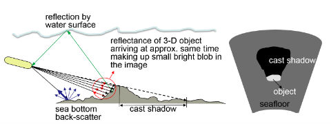
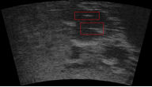

Abstract
In this paper, we present methods for segmenting noisy two-dimensional forward-scan sonar images and classify and model their background. The segmentation approach differentiates the highlight blobs, cast shadows, and the background of sonar images. There is usually little information within relatively large background regions corresponding to the flat sea bottom and (or) water column, as they are often corrupted with speckle noise. Our experiments show that the background texture is dominated by the speckle noise which has the appearance of a pseudo-random texture. We show that the background texture of the underwater sonar images can be categorized by a small number of classes. The statistical features work better than the texture-based features in categorizing the pseudo-random background, which further strengthen our hypothesis of the dominance of noise over the background texture. As a result, we can model the noisy background with a few parameters. This has an application in coding the sonar images in which highlight blob regions and cast shadows are coded at the encoder side while the speckle noise-corrupted background can be synthesized at the decoder side. Since the background regions occupy a large fraction of the FS sonar image, we expect higher compression rates than most current image or video coding standards and other custom-designed sonar image compression techniques.
Introduction
 Acoustic signals can penetrate through silt and other sources of turbidity that prohibit the deployment of optical systems, the most common imaging modality in the terrestrial domain. This has motivated the development and improvement of highfrequency 2-D forward-scan (FS) video sonar systems over the past decade, to meet the critical need of scene imaging at improved resolution under poor visibility [1]. Automated processing of FS sonar video imagery enables significant capabilities for a wide variety of underwater task and operations, e.g., fish stock assessment, seafloor and habitat mapping, and the inspection of pipelines and other structures.
Automated sonar image processing is rather complex due to presence of and interactions among visual cues and artifacts. To elaborate, we first note that FS sonar systems are typically deployed at large grazing angles (relative to the sea bottom) in order to 1) image a larger region of the sea floor within a single image; 2) improve image quality and contrast by increasing the diffuse backscatter returns relative to specular reflections. Consequently, referring to the cartoon drawing in Fig. 1(a), the 3-D targets on the sea bottom can often be detected by two visual cues with distinct characteristics: 1) A thin but horizontally elongated bright image blob, generated by the backscattered signal from visible object surfaces; 2) shadows cast by the object on neighboring background surfaces. In addition to target detection, the cast shadows provide useful visual cues for 3-D object shape reconstruction
and sonar motion estimation [1], [2]. Additionally, artifacts within these regions can arise due to multiple reflections.
As depicted in Fig. 1(a), the object is also insonified indirectly by the acoustic waves that are reflected from the sea floor and the sea surface when operating within shallow waters. The fraction of this indirect incident energy – reflected by the visible object surfaces towards the sonar receiver along various beams – travels longer distances than those due to the direct insonification. The multipath component due to ground reflection generally distorts the object highlight, while component due to surface reflection often appears as bright streaks within the shadow regions. Additionally, the multipath components can be generated by strong nearby reflectors, e.g., metallic objects. Due to unknown number, location and pose of scene objects, these distortions of object highlights and the cast show due to multi-path components are generally unpredictable. Fig. 1(b) depicts a sample FS sonar image captured in very shallow water, where the highlights regions generated by the surface reflections are identified by the red squares.
For the scene interpretation from FS sonar image, informative image regions of interest (ROI) comprise of the object blobs, cast shadows, and highlights from multi-path reflections. Thus, these regions, offering useful visual cues about shape, positions and sizes of various objects, distance from the sea surface, etc., may be treated as the signal components.
The treatment of speckle noise due to coherent interference of acoustic waves is one of the serious complexities in automated sonar image processing. The speckle noise often has the appearance of, and may be indistinguishable from pseudo-random texture of the background scene surfaces. This can be noted within the background regions of three sample FS sonar images in Fig. 2, recorded in a lake (a,b) and a marina (c). In some cases, the speckle noise may also distort the signal component, overshadowing certain visual cues for image interpretation. There is generally little information within relatively large background regions corresponding to the flat sea bottom and (or) water column, particularly when corrupted with speckle noise. Thus, it may be desirable to discriminate between the signal component containing critical visual cues and the background, prior to scene interpretation through pre-processing. The varying composition of the noisecorrupted background regions (e.g., water column, soft to hard bottoms) leads to different texture characteristics, as shown in Fig. 3. In order to reconstruct a sonar image, it is important to classify and model these noisy background areas.
This study is aimed at devising a solution for effective compact representation of a sonar image by: 1) segmenting the signal (ROI) from the noisy background; 2) deriving an efficient representation of the latter based on the speckle noise and its statistics. To elaborate, we extract the foreground ROI (highlight and shadow regions) and model the noisy background. While our goals is solely the segmentation, classification and modeling, one should take note of some key applications: efficient FS sonar video coding and synthesis, as well as robot localization based of ROI and background classification.
For the coding application, highlight blob regions and cast shadows are coded at the encoder side while the speckle noise-corrupted background is synthesized at the decoder side. Because the background regions occupy a large fraction of the FS sonar image, we expect higher compression rates than most current image or video coding standards and other customdesigned sonar image compression techniques that do not fully exploit the unique texture characteristics in sonar imagery [3]– [6]. For operations involving autonomous underwater vehicles (AUVs), the reduced bit rate for video transmission could enable transmission of real-time FS sonar video through underwater acoustic channels. Moreover, for image/video synthesis applications, background classification and modeling enable improving the subjective visual appearance based on raycasting [7], [8]. Moreover, this work can motivate more applications for the realization of key robotics capabilities in turbid waters. For certain applications, high volume of watermark information can be incorporated within the noisy background region, enabling integrity check/verification of the decoded data.
In this paper, we apply the k-means segmentation technique to differentiate the highlight blobs, cast shadows, and the background. We have noted that the texture segmentation techniques are not effective for this purpose. The reason is mostly due to the dominance of the noise over the available texture features. However, since the three major regions differ in the average intensity, intensity-based multi-level thresholding has proven to be effective.
Our experiments show that the background texture of the underwater sonar images, some examples of which are shown in Fig. 3, can be categorized by a small number of classes. Here, we use an unsupervised technique to cluster all the background images in our training data into different background classes. Then, using these classes, we train a supervised system to label the class of the background in the test images. This will reduce the complexity of the background modeling and number of parameters to represent them. Our experiments showed that statistical features were discriminating the different background classes much better than the wellknown texture-based features. These results strengthen our hypothesis of the dominance of noise over texture features in the background regions. Comprehensive experiments are conducted by comparing our scheme with other sonar texture synthesis methods [9]–[11].
The rest of the paper is organized as follows: Section II describes the methods used for pre-processing and segmentation of FS sonar images. Section III presents the feature extraction and clustering method used for background classification. Background modeling and synthesis methods are explained in Section IV. The implementation details and experimental results are presented in Section V, and finally, Section VI concludes the paper.
To view full text, please click here or visit IEEE.
REFERENCES
[1] S. Negahdaripour, “On 3-D scene interpretation from FS sonar imagery,” in MTS/IEEE Oceans’12, 2012, pp. 1–9.
[2] S. Negahdaripour, “On 3-D motion estimation from feature tracks in 2-D FS sonar video,” IEEE Transactions on Robotics, vol. 29, no. 4, pp. 1016–1030, 2013.
[3] X. Wen, W. Yuling, and Z. Weiqing, “Sonar image processing system for an autonomous underwater vehicle (AUV),” in MTS/IEEE Oceans’95, vol. 3, 1995, pp. 1883–1886.
[4] J. Impagliazzo, W. Greene, and Q. Q. Huynh, “Wavelet image compression algorithm for side-scan sonar and teleradiology,” in SPIE’s 1995 Symposium on OE/Aerospace Sensing and Dual Use Photonics. International Society for Optics and Photonics, 1995, pp. 162–172.
[5] R. Cunha, M. Figueiredo, and C. Silvestre, “Simultaneous compression and denoising of side scan sonar images using the discrete wavelet transform,” in MTS/IEEE Oceans’00, 2000, pp. 195–199.
[6] T. Higdon, “The compression of synthetic aperture sonar images,” 2008.
[7] J.-H. Gu, H.-G. Joe, and S.-C. Yu, “Development of image sonar simulator for underwater object recognition,” in MTS/IEEE Oceans’13, 2013, pp. 1–6.
[8] J. M. Bell, “Application of optical ray tracing techniques to the simulation of sonar images,” Optical Engineering, vol. 36, no. 6, pp. 1806–1813, 1997.
[9] G. R. Elston and J. M. Bell, “Pseudospectral time-domain modeling of non-rayleigh reverberation: synthesis and statistical analysis of a sidescan sonar image of sand ripples,” IEEE Journal of Oceanic Engineering, vol. 29, no. 2, pp. 317–329, 2004.
[10] J. Tegowski and A. Zielinski, “Synthesis and wavelet analysis of sidescan sonar sea bottom imagery,” Hydroacoustics, vol. 9, pp. 199–208, 2006.
[11] P. Blondel and O. G. Sichi, “Textural analyses of multibeam sonar imagery from stanton banks, northern ireland continental shelf,” Applied Acoustics, vol. 70, no. 10, pp. 1288–1297, 2009.